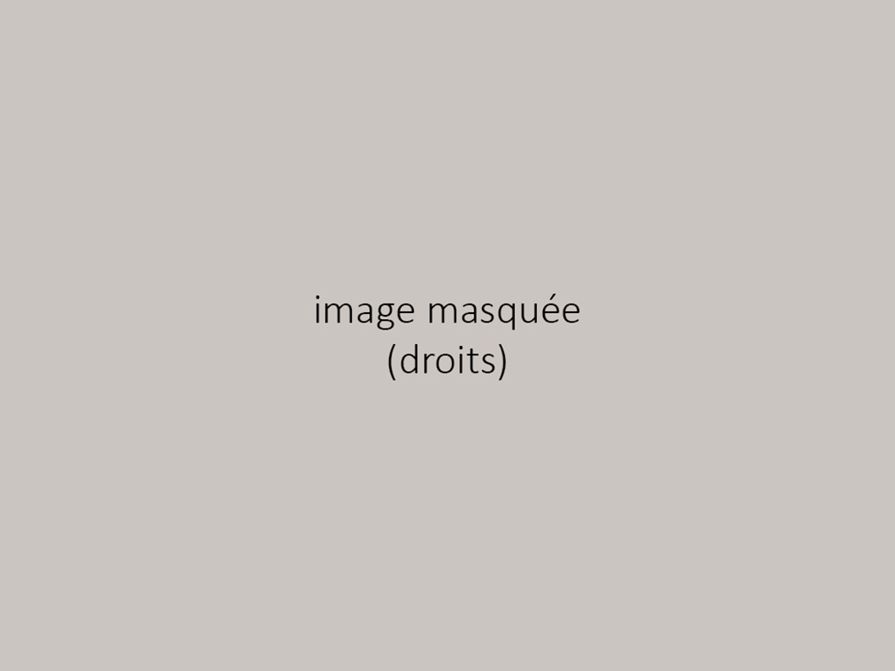
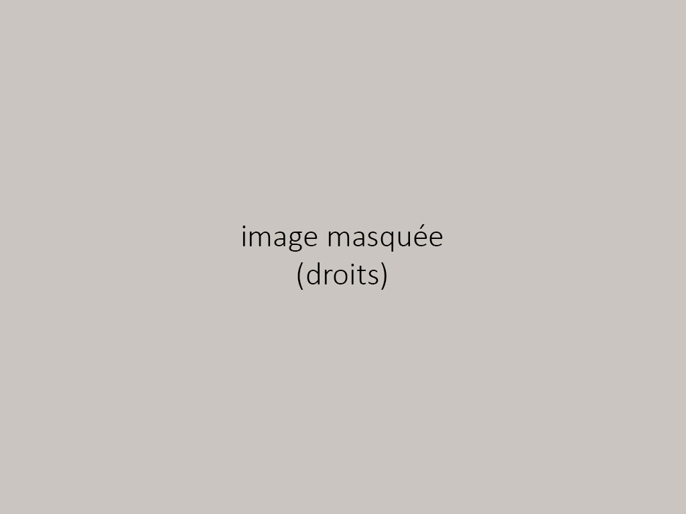
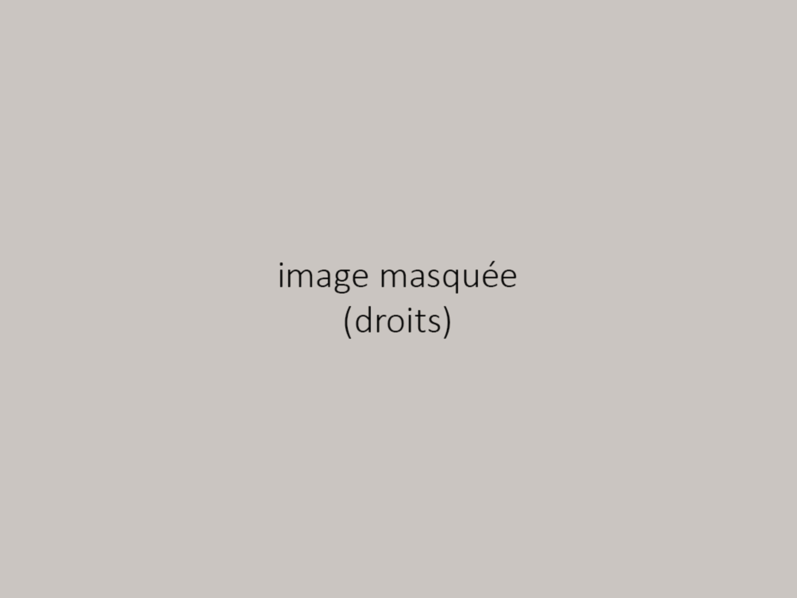

Notre Association
En 2018, lors d'un échange scolaire en Inde, nous avons découvert une école défavorisée à New Delhi accueillant des enfants de 3 à 12 ans. Touchés par leur manque de moyens, nous avons organisé une collecte de vêtements et de fournitures scolaires avant notre départ pour leur venir en aide.
Face aux besoins, nous avons décidé, à notre retour en France, de fonder Children of India en janvier 2019. Notre objectif : améliorer leurs conditions d'apprentissage et leur offrir un accès digne à l'éducation.Nos Valeurs
Chez Children of India, nous croyons que chaque enfant doit avoir les mêmes chances d'apprendre et de construire son avenir. Nos actions reposent sur trois valeurs fondamentales :
- Solidarité - Engagement - Éducation et ouverture au monde

Notre Mission
L'éducation est un droit fondamental, mais de nombreux enfants en Inde en sont encore privés. Children of India œuvre pour leur permettre d'aller à l'école dans de bonnes conditions.
- Nous fournissons des uniformes, un élément essentiel pour leur intégration scolaire. - Nous leur apportons des cartables et des fournitures scolaires. - Nous travaillons à l'installation de purificateurs d'eau et d'électricité pour un meilleur confort éducatif.